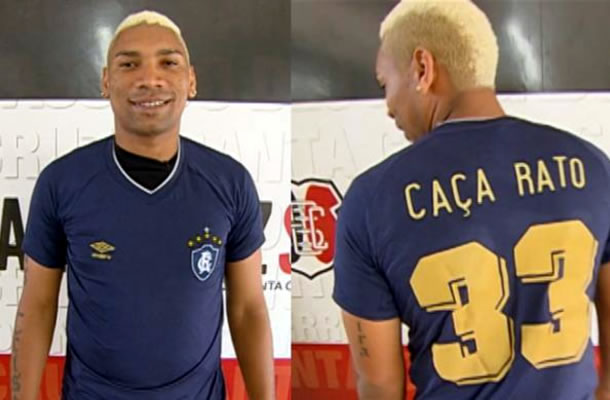

Flávio Augusto do Nascimento, mais conhecido como Flávio Caça-Rato, ou simplesmente Caça-Rato, (Recife, 29 de junho de 1986), é um futebolista brasileiro que atua como atacante. Atualmente, joga pelo Atlético Torres. Revelado pelo Sport Club do Recife, foi emprestado ao Sergipe e ao Social Esportiva Vitória, foi para a Cróacia no segundo semestre de 2008 passando um ano por lá. Voltando ao Brasil passou seis meses no Cabense de Pernambuco, em seguida foi para o América de Natal, voltando ao Cabense em 2011, onde jogou o Campeonato Pernambucano de 2011, chamou a atenção do Santa Cruz. Santa Cruz Foi contratado em 2011 pelo Santa Cruz, onde foi campeão do Campeonato Pernambucano de 2012 e conseguiu o acesso para a Série C. Em 2013, foi mais uma vez campeão pernambucano marcando um gol na final. Fez o gol do acesso a Série B e o gol do título do Campeonato Brasileiro da Série C sobre o Sampaio Corrêa. Em 26 de janeiro de 2014, ganhou uma matéria chamada de Voices of Brazil no The Guardian.[2] No jogo contra o Paraná atingiu a marca histórica de cem jogos pelo Santa Cruz. Tupi FC Chegou ao Tupi como o principal nome da equipe no ano. Jogará o Campeonato Mineiro 2017.[6] Antes do Campeonato o Tupi realizou um amistoso contra o Bangu, partida que marcou o encontro de dois grandes jogadores, Caça Rato e Loco Abreu.[7] Fez sua estreia no campeonato mineiro na primeira rodada contra o Tombense, e na ocasião o galo carijó perdeu de 1–0. Marcou seu primeiro gol pelo carijó, no jogo contra a URT, que na ocasião o Tupi ganhou de 2–0 em casa. Foi a primeira vitória do Carijó no campeonato mineiro. [8] Marcou contra o Democrata, garantindo a vitória por 1–0 dentro de casa para o Galo Carijó. Vitória importante para o Tupi no campeonato mineiro, chegando a oitavas. Voltou a ser decisivo, marcando gol contra o Vila Nova MG, ajudando o galo carijó a vencer a partida por 1–2 fora se casa. Foi a segunda vitória seguida do Tupi. Contra o América Mineiro, seu companheiro de equipe Jajá, passou pelo goleiro, e parou a bola com o gol aberto para fazer de calcanhar, mas antes disso Caça-Rato chegou e encheu o pé, colocando a bola no fundo da rede. A partida ficou empatada em 1–1 no Mário Helênio.[9] Ao fim do Campeonato Mineiro saiu do Tupi.
